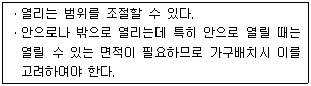
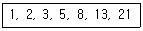
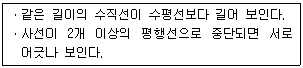
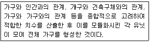
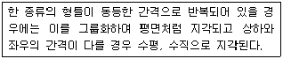
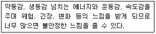
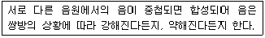
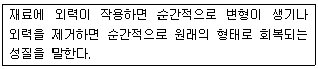
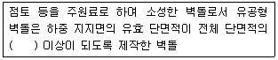

실내건축기능사 (2012-07-22 기출문제)
1과목: 실내디자인
1. 상점의 공간구성에 있어서 판매공간에 해당하는 것은?
- 파사드공간
- 상품관리공간
- 시설관리공간
- 상품전시공간
(정답률: 82%)

2. 다음과 같은 특징을 갖는 창의 종류는?

- 미닫이창
- 여닫이창
- 미서기창
- 오르내리창
(정답률: 80%)
3. 다음은 피보나치 수열의 일부분이다. “21” 바로 다음에 나오는 숫자는?

- 30
- 34
- 42
- 44
(정답률: 96%)
4. 다음 설명에 알맞은 착시의 종류는?

- 운동의 착시
- 다의도형 착시
- 역리도형 착시
- 기하학적 착시
(정답률: 52%)
5. 주택에서 거실에 식사공간을 부속시키고, 부엌을 분리한 형식은?
- D형
- LD형
- DK형
- LDK형
(정답률: 80%)
6. 광원을 넓은 면접의 벽면에 매입하여 비스타(vista)적인 효과를 낼 수 있으며 시선에 안락한 배경으로 작용하는 건축화 조명방식은?
- 코브 조명
- 코퍼 조명
- 광창 조명
- 광천장 조명
(정답률: 84%)
7. 다음 설명에 알맞은 가구는?

- 인체계 가구
- 수납용 가구
- 시스템 가구
- 빌트 인 가구
(정답률: 52%)
8. 다음 설명과 가장 관계가 깊은 형태의 지각심리는?

- 유사성
- 폐쇄성
- 연속성
- 근접성
(정답률: 42%)
9. 다음 설명에 알맞은 선의 종류는?

- 사선
- 수평선
- 수직선
- 기하곡선
(정답률: 84%)
10. 간접조명방식에 관한 설명으로 옳지 않은 것은?
- 조명률이 높다.
- 실내반사율의 영향이 크다.
- 그림자가 거의 형성되지 않는다.
- 경제성보다 분위기를 목표로 하는 장소에 적합하다.
(정답률: 82%)
11. 생활에 적합한 건축을 위해 인체와 관련된 모듈의 사용에 있어 단순한 길이의 배수보다는 황금비례를 이용하여 타당하다고 주장한 사람은?
- 르 꼬르뷔지에
- 월터 그로피우스
- 미스 반 데어 로에
- 프래읔 로이드 라이트
(정답률: 86%)
12. 주택의 부엌가구 배치 유형 중 부엌 내의 벽면을 이용하여 작업대를 배치한 형식으로 작업면이 넓어 작업 효율이 가장 좋은 것은?(오류 신고가 접수된 문제입니다. 반드시 정답과 해설을 확인하시기 바랍니다.)
- ㅡ자형
- L자형
- ㄷ자형
- 아일랜드형
(정답률: 54%)
13. 디자인 원리 중 유사조화에 관한 설명으로 옳지 않은 것은?(오류 신고가 접수된 문제입니다. 반드시 정답과 해설을 확인하시기 바랍니다.)
- 통일보다 대비의 효과가 더 크게 나타난다.
- 질적, 양적으로 전혀 상반된 두 개의 요소의 조합으로 성립된다.
- 개개의 요소 중에서 공통성이 존재하므로 뚜렷하고 선명한 이미지를 준다.
- 각각의 요소가 하나의 객체로 존재하며 다양한 주제와 이미지들이 요구될 때 주로 사용된다.
(정답률: 34%)
14. 등받이와 팔걸이가 없는 형태의 보조의자로 가벼운 작업이나 잠시 걸터앉아 휴식을 취하는데 사용되는 것은?
- 스툴
- 카우치
- 이지 체어
- 라운지 체어
(정답률: 78%)
15. 공간의 동선에 관한 설명으로 옳지 않은 것은?
- 동선의 유형 중 직선형은 최단거리의 연결로 통과시간이 가장 짧다.
- 실내에 2개 이상의 출입구는 그 갯수에 비례하여 동선이 원활해지므로 통로면적이 감소된다.
- 동선이 교차하는 지점은 잠시 멈추어 방향을 결정할 수 있도록 어느 정도 충분한 공간을 마련해 준다.
- 동선은 짧으면 짧을수록 효율적이나 공간의 성격에 다라 길게 하여 더 많은 시간동안 머무르도록 유도되기도 한다.
(정답률: 66%)
16. 일조의 확보와 관련하여 공동주택의 인동간격 결정과 가장 관계가 깊은 것은?
- 춘분
- 하지
- 추분
- 동지
(정답률: 63%)
17. 벽과 같은 고체를 통하여 유체(공기)에서 유체(공기)로 열이 전해지는 현상은?
- 복사
- 대류
- 열관류
- 열전도
(정답률: 56%)
18. 결로 방지대책과 가장 관계가 먼 것은?
- 환기
- 난방
- 단열
- 방수
(정답률: 74%)
19. 공동주택의 거실에서 환기를 위하여 설치하는 창문의 면적은 최소 얼마 이상이어야 하는가? (단, 창문으로만 환기를 하는 경우)
- 거실 바닥 면적의 1/5 이상
- 거실 바닥 면적의 1/10 이상
- 거실 바닥 면적의 1/20 이상
- 거실 바닥 면적의 1/40 이상
(정답률: 54%)
20. 다음의 설명에 알맞은 음의 성질은?

- 반사
- 회절
- 굴절
- 간섭
(정답률: 69%)
2과목: 실내환경
21. 기본 점성이 크며 내수성, 내약품성, 전기절연성이 모두 우수한 만능형 접착제로 금속, 플라스틱, 도자기, 유리, 콘크리트 등의 접합에 사용되는 것은?
- 요소수지 접착제
- 비닐수지 접착제
- 멜라민수지 접착제
- 에폭시수지 접착제
(정답률: 80%)
22. 석회암이 변화되어 결정화한 것으로 주성분은 탄산석회이며, 갈면 광택이 나는 석재는?
- 응회암
- 화강암
- 대리석
- 점판암
(정답률: 85%)
23. 건조실에 목재를 쌓고 온도, 습도, 풍속 등을 인위적으로 조절하면서 건조하는 목재의 인공건조 방법은?
- 대기건조
- 침수건조
- 진공건조
- 열기건조
(정답률: 53%)
24. 시멘트가 습기를 흡수하여 경미한 수화반응을 일으켜 생성된 수산화칼슘과 공기중의 탄산가스가 반응하여 탄산칼슘을 생성하는 작용을 의미하는 것은?
- 풍화
- 응결
- 크리프
- 중성화
(정답률: 39%)
25. 다음 중 기경성 미장재료에 해당되는 것은?
- 시멘트 모르타르
- 경석고 플라스터
- 혼합석고 플라스터
- 돌로마이트 플라스터
(정답률: 58%)
26. 다음의 설명에 알맞은 재료의 역학적 성질은?

- 소성
- 점성
- 탄성
- 인성
(정답률: 94%)
27. 화강암에 관한 설명으로 옳지 않은 것은?
- 내화성이 크다.
- 내구성이 우수하다.
- 구조재 및 내ㆍ외장재로 사용이 가능하다.
- 절리의 거리가 비교적 커서 대재(大材)를 얻을 수 있다.
(정답률: 65%)
28. 다음 중 콘크리트의 신축이음(Expansion Joint) 재료에 요구되는 성능조건과 가장 관계가 먼 것은?
- 콘크리트에 잘 밀착하는 밀착성
- 콘크리트 이음사이의 충분한 수밀성
- 콘크리트의 수축에 순응할 수 있는 탄성
- 콘크리트의 팽창에 저항할 수 있는 압축강도
(정답률: 48%)
29. 건축재료의 요구성능 중 감각정 성능이 특히 요구되는 건축재료는?
- 구조재료
- 마감재료
- 차단재료
- 내화재료
(정답률: 76%)
30. 아스팔트의 연성을 타나내는 수치로서 온도의 변화와 함께 변화하는 것은?
- 신도
- 인화점
- 침입도
- 연화점
(정답률: 33%)
3과목: 실내건축재료
31. 경화 콘크리트의 역학적 기능을 대표하는 것으로, 경화 콘크리트의 강도 중 일반적으로 가장 큰 것은?
- 휨강도
- 압축강도
- 인장강도
- 전단강도
(정답률: 82%)
32. 콘크리트 내부에 미세한 독립된 기포를 발생시켜 콘크리트의 작업성 및 동결융해 저항성능을 향상시키기 위해 사용되는 화학혼화제는?
- AE제
- 기포제
- 유동화제
- 플라이애쉬
(정답률: 82%)
33. 단열유리라고도 하며 철, Ni, Cr 등이 들어 있는 유리로서, 서향일광을 받는 창 등에 사용되는 것은?
- 내열유리
- 열선흡수유리
- 열선반사유리
- 자외선차단유리
(정답률: 57%)
34. 도료의 구성요소 중 도막 주요소를 용해시키고 적당한 점도로 조절 또는 도장하기 쉽게 하기 위하여 사용되는 것은?
- 안료
- 용제
- 수지
- 전색제
(정답률: 39%)
35. 강의 열처리 방법에 해당되지 않는 것은?
- 불림
- 인발
- 풀림
- 뜨임질
(정답률: 74%)
36. 자기질 타일의 흡수율 기준으로 옳은 것은?
- 3.0% 이하
- 5.0% 이하
- 8.0% 이하
- 18.0% 이하
(정답률: 65%)
37. 다음은 한국산업표준에 따른 점토 벽돌 중 미장 벽돌에 관한 용어의 정의이다. ( )안에 알맞은 것은?

- 30%
- 40%
- 50%
- 60%
(정답률: 70%)
38. 다음 중 열경화성 수지에 해당되는 것은?
- 아크릴수지
- 염화비닐수지
- 폴리우레탄수지
- 폴리에틸렌수지
(정답률: 39%)
39. 보통 합판의 제조 방법에 따른 구분에 해당되지 않는 것은?
- 일반
- 내수
- 난연
- 무취
(정답률: 34%)
40. 창호철물과 사용되는 창호의 연결이 옳지 않은 것은?
- 레일 - 미닫이문
- 크레센트 - 오르내리창
- 플로어 힌지 - 여닫이문
- 레버토리 힌지 - 쌍여닫이창
(정답률: 53%)
41. 다음 중 건축제도의 치수 기입 에 관한 설명으로 옳은 것은?
- 협소한 간격이 연속될 때에는 치수 간격을 줄여 치수를 쓴다.
- 치수는 특별히 명시하지 않는 한 마무리 치수로 표시한다.
- 치수 기입은 치수선에 평행하게 도면의 오른쪽에서 왼쪽으로, 아래로부터 위로 읽을 수 있도록 기입한다.
- 치수 기입은 항상 치수선 중앙 아래 부분에 기입하는 것이 원칙이다.
(정답률: 70%)
42. 철골구조의 접합 방법 중 접합된 판 사이에 강한 압력이 작용하여 이에 의한 접합재간의 마찰저항에 의하여 힘을 전달하는 접합 방식은?
- 강접합
- 핀접합
- 용접접합
- 고력볼트접합
(정답률: 74%)
43. 철근콘크리트구조의 1방양 슬래브의 최소두께는 얼마 이상인가?
- 80mm
- 100mm
- 150mm
- 200mm
(정답률: 63%)
44. 창문틀의 좌우에 수직으로 세워댄 틀은?
- 밑틀
- 웃틀
- 선틀
- 중간틀
(정답률: 62%)
45. 다음 중 주로 수평방향으로 작용하는 하중은?
- 고정하중
- 활하중
- 풍하중
- 적설하중
(정답률: 43%)
46. 도명 표시 기호 중 동일한 간격으로 철근을 배치할 때 사용하는 기호는?
- @
- □
- THK
- R
(정답률: 68%)
47. 도로 포장용 벽돌로서 주로 인도에 많이 쓰이는 것은?
- 이형벽돌
- 포도용 벽돌
- 오지벽돌
- 내화벽돌
(정답률: 80%)
48. 다음의 재료표시기호에서 목재의 구조재 효시 기호는?
(정답률: 58%)
49. 철근콘크리트구조에 관한 설명 중 옳지 않은 것은?
- 각 구조부를 일체로 구성한 구조이다.
- 자중이 무겁고 기후의 영향을 많이 받는다.
- 내구ㆍ내화성이 뛰어나다.
- 철근과 콘크리트 간 선팽창계수가 크게 다른 점을 이용한 구조이다.
(정답률: 41%)
50. 목구조에서 2층 이상의 기둥 전체를 하나의 단일재로 사용하는 기둥은?
- 통재기둥
- 평기둥
- 샛기둥
- 동자기둥
(정답률: 83%)
4과목: 건축일반
51. 다음 중 목구조에 대한 설명으로 옳지 않은 것은?
- 건물의 무게가 가볍고, 가공이 비굑적 용이하다.
- 내화성이 좋다.
- 함수율에 따른 변형이 크다.
- 나무 고유의 색깔과 무늬가 있어 아름답다.
(정답률: 80%)
52. 목재접합 중 2개 이상의 목재를 길이 방향으로 붙여 1개의 부재로 만드는 것은?
- 이음
- 쪽매
- 맞춤
- 장부
(정답률: 53%)
53. 다음 중 목구조의 구조부위와 이음방식이 잘못 짝지어진 것은?
- 서까래 이음 - 빗이음
- 걸레받이 - 턱솔이음
- 난간두겁대 - 은장이음
- 기둥의 이음 - 엇걸이 산지이음
(정답률: 39%)
54. 한변이 300mm 정도인 네모뿔형의 돌로써 석축에 사용되는 돌을 무엇이라고 하는가?
- 호박돌
- 잡석
- 견치돌
- 장대석
(정답률: 67%)
55. 그림과 같은 지붕 평면을 구성하는 지붕의 명칭은?
- 합각지붕
- 모임지붕
- 박공지붕
- 꺾인지붕
(정답률: 46%)
56. 다음 중 철골구조의 보에 대한 설명으로 옳지 않은 것은?
- 플레이트보에서 웨브의 국부 좌굴을 방지하기 위해 거셋 플레이트를 사용한다.
- 휨강도를 높이기 위해 커버플레이트를 사용한다.
- 하이브리드거더는 다른 성질의 재즐을 혼성하여 만든 일종의 조립보이다.
- 플랜지는 H형강, 플레이트보 또는 래티스보 등에서 보의 단면의 상하에 날개처럼 내민 부분을 말한다.
(정답률: 46%)
57. 다음 중 목구조의 2층 마루에 속하지 않는 것은?
- 홑마루
- 보마루
- 동바리마루
- 짠마루
(정답률: 55%)
58. 고층건물의 구조 형식에서 층고를 최소로 할 수 있고 외부보를 제외하고 내부에는 보 없이 바닥판만으로 구성되는 구조는?
- 내력벽 구조
- 전단 코어 구조
- 강성 골조 구조
- 무량판 구조
(정답률: 64%)
59. 슬래브 배근에서 가장 하단에 위치하는 철근은?
- 장변 단부 하부 배력근
- 단변 하부 주근
- 장변 중앙 하부 배력근
- 장변 중앙 굽힘철근
(정답률: 44%)
60. 설계도면의 종류 중 실시설계도에 해당되는 것은?
- 구상도
- 조직도
- 전개도
- 동선도
(정답률: 68%)